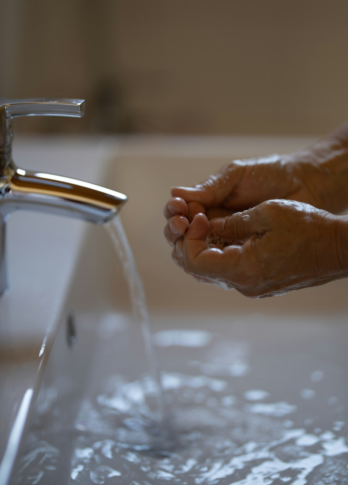

Why Clean Water Matters
Clean water and sanitation are essential for health and well-being. However, millions around the world lack access to these necessities. This can be the result of a multitude of reasons such as war and poverty.



Ensuring access to safe water and sanitation for all
Clean water and sanitation are essential for health and well-being. However, millions around the world lack access to these necessities. This can be the result of a multitude of reasons such as war and poverty.